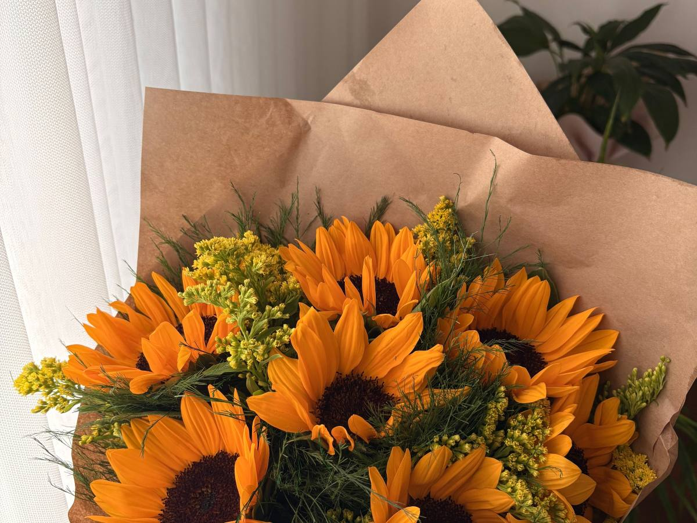
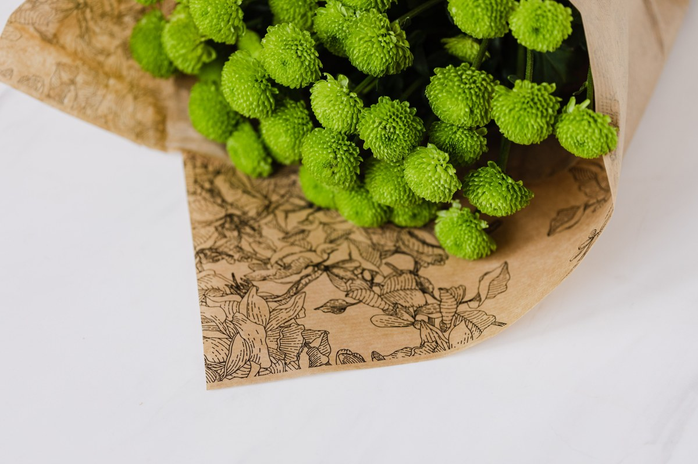

Peñalolén · Av. José Arrieta 6690
¿Cuánto me dura?
Florería Simón: 150 reseñas y flores frescas todos los días, de 8:30 a 20:30.
- 150reseñas en Google
- 7días a la semana, también el domingo
- 20:30cierran de lunes a sábado
- 0fotos suyas en internet: las flores se compran mirando
Antes de elegir
Cuánto dura el ramo
Rosa
5 a 7 días
La de siempre. Dura más si se corta el tallo cada dos días.
Girasol
6 a 10 días
Bebe mucha agua: hay que rellenar el florero seguido.
Lilium
8 a 12 días
Abre de a poco: se compra cerrado y dura toda la semana.
Clavel
10 a 14 días
El que más aguanta por lo que cuesta.
Tulipán
4 a 6 días
Sigue creciendo dentro del florero y se inclina hacia la luz.
Orquídea en maceta
Semanas
No es ramo: es planta. Se riega poco y se vuelve a florecer.
- Cambia el aguaCada dos días, con el florero limpio.
- Corta al sesgoDos centímetros de tallo, en diagonal.
- Lejos del solY lejos de la fruta: la madura y las marchita.
Los días son de referencia y los confirma la florería según lo que llegue fresco esa semana.
Se corta el tallo y el agua sube.
Qué hay
Lo que se arma en el mesón
-

Ramos
Del día
Con lo que llegó fresco esa mañana.
-
Rosas
Sueltas o en ramo
Se arman a la medida.
-
Plantas
En maceta
Para regalar algo que siga.
-
Tulipanes
De temporada
No hay todo el año: llegan por temporada.
-
Envoltura
Papel y cinta
Se envuelve al momento.
-
Encargos
Para una fecha
Se avisa por WhatsApp con tiempo.
Lo que trabajan de verdad lo dice la florería: esto es una propuesta de secciones.
Ciento cincuenta reseñas, y ni una foto en internet de lo que hay hoy en el balde.
Google, al 16-09-2026
El local
Baldes, tijeras y agua fría

Fotos de referencia: ninguna es de la florería.
Dónde está
Av. José Arrieta 6690
- +56 9 9675 3942
- Lunes a sábado
- 08:30–20:30
- Domingo
- 08:00–15:00
Está en Peñalolén, en el borde con La Reina: la avenida cruza las dos comunas.
Av. José Arrieta 6690 Abrir en Google Maps
Para Florería Simón
Qué es real y qué falta
Lo verificado
El WhatsApp, el horario, las 150 reseñas y la dirección de Av. José Arrieta 6690, al 16-09-2026.
Lo de ejemplo
Los días de cada flor, lo que trabajan y todas las fotos.
Lo que falta
Fotos suyas. Las flores se compran mirando, y hoy no hay dónde ver lo que llegó esta semana.